If you don't want to print now,
Models that explain variability in a response
The normal model for data in several groups is just one of many models that explain variability in a response measurement in terms of other variables. (Group membership can be treated as a categorical explanatory variable.)
| Response variable | Variables that explain some of its variability |
|---|---|
| Exam marks in a second year statistical methods course | Marks in a prerequisite first year statistics course explain some of the variability. Hours of study could explain further variability if this information is available. |
| Quality of apples received by a juicing factory | Part of the variability is explained by the source of the apples — apples from some regions (and possibly some farmers) are of better quality. |
| Numbers of customers in a cafe over several days | The daily number of customers is affected by the day of the week, and also by the season and the weather. |
In any model, some of the response variation is explained (in terms of explanatory variables) but some variation remains unexplained. Sums of squares are used to describe explained and unexplained (residual) variation and to test whether a simpler model that does not involve explanatory variables fits the data equally well.
Normal regression model
In the remainder of this section, we apply analysis of variance methodology to normal linear models that explain response variation in terms of a numerical explanatory variable, x.
 for the i'th value in the data set
for the i'th value in the data set
or equivalently,
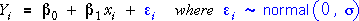
Explained and unexplained components
For the normal linear model, the least squares line provides the best parameter
estimates and predictions. The least squares line provides fitted values,  ,
for each observation. If the linear model is useful, these fitted values will
be different from the overall response mean.
,
for each observation. If the linear model is useful, these fitted values will
be different from the overall response mean.
The vertical distances of data points to the least squares line — the residuals — are left-over unexplained variation.

| Total component | These differences reflect the total variability of the response — without taking account of the explanatory variable. | |
| Explained component | These components describe how much the predicted response changes from using the least squares line (as opposed to simply using the overall mean as a prediction). | |
| Residual component | The residuals describe the extent to which the explanatory variable fails to predict the response. Their variation is not explained by the model. |
Airline complaints
The scatterplot below shows the number of complaints (per 100,000 passengers) and the proportion of flights arriving on time for the ten largest airlines in the USA in 1998.
The total component for each airline is initially represented as a green line in the scatterplot and a jittered dot plot is shown on the right. Click on any cross to discover the airline that it represents.
Use the pop-up menu to show the residual and explained components. In this data set, most of the variation in the complaint rates is explained by the proportion of late flights — the residuals are relatively small compared to the total components.
Explained and residual sums of squares
The relative sizes of the explained and residual components reflect the proportion of response variation that is explained by a linear model. Their sizes can be summarised by their sums of squares.
| The total sum of squares reflects the total variability of the response — the response standard deviation is the square root of this divided by (n-1). | |
| The explained sum of squares measures the variability of the fitted values from the least squares fit. This is the variability that is explained by the model. | |
| The residual sum of squares quantifies the spread of values around the least squares line. This is a measure of the unexplained variability in the response. |
The explained and residual sums of squares add to give the total sum of squares,

(This relationship requires a fair bit of algebra to prove!)
| The relative sizes of the explained and residual sums of squares describe how much of the variability is explained by the model. |
Simulation: Impurities in plastic
The next diagram shows simulated data that might describe the impurities recorded from batches of plastic produced at different temperatures (degrees Fahrenheit).
Click on the jittered dot plots on the right to display the different components as coloured vertical lines on the scatterplot.
Drag the slider to change the strength of the relationship between the impurities and temperature. Observe that:
|
The relative sizes of the sums of squares therefore hold information about the strength and significance of the relationship.
Coefficient of determination
We have seen that the total sum of squares can be split into two parts, the explained and residual sums of squares.
As in the multi-group normal model, a useful summary statistic is the proportion of the total variation that is explained, the coefficient of determination, R2,

The coefficient of determination is always between 0 and 1. R2 is close to 1 when most of the response variation is explained by the explanatory variable; it is close to 0 when most variation is unexplained.
Because the explained and residual sums of squares add to the total sum of squares, the residual sum of squares is a proportion (1 - R2) of the total variation, so this is the proportion of total variation that is unexplained by the normal linear model.
Correlation coefficient
Although it is derived with quite a different aim, the value of R2 is the square of the correlation coefficient between the explanatory and response variables for regression data. This may help to interpret its value.

Illustration
We again consider simulated data that might describe the impurities recorded from batches of plastic produced at different temperatures.
Use the slider to adjust the strength of the relationship, and observe how the value of R2 is affected.
Real data sets
Use the popup menu below to display the coefficient of determination for different data sets and see how it is interpreted.
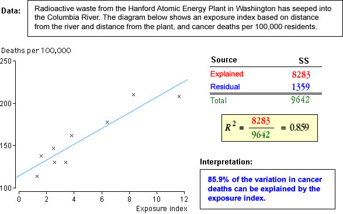
The coefficient of determination for experimental data
In experiments, the values of the explanatory variable are usually chosen by the experimenter. It is important to recognise that the coefficient of determination not only depends on the characteristics of the underlying linear model, but...
R2 is also affected by the choice of x-values.
Increasing the range of x-values in the experiment will usually increase the value of R2.
Conversely, if all x-values are chosen to be similar, R2 is likely to be small, whatever the characteristics of the underlying linear model.
R2 should not be interpreted as a summary of how strongly Y depends on X for experimental data — its value also depends on the values of X used in the experiment.
Although R2 also depends on the range of x-values for observational data, this is less of a problem since these are not chosen by the data collector.
Illustration
The diagram below shows a normal linear model (represented by the grey band) and allows samples to be selected from this model in an experiment. The slider adjusts the x-values used in the experiment.
When the range of x-values becomes small, observe that
However note that R2 is not affected greatly by the sample size — increasing the sample size with the same range of x-values results in a similar value of R2.
Is the model's slope zero?
We now use the explained and residual sums of squares to test whether there is a relationship between the response, Y, and an explanatory variable, X. Assuming the model
this test can be expressed in terms of the parameters as:
H0 : β1 = 0
HA : β1 ≠ 0
Analysis of variance table
The calculations are organised in an analysis of variance table.
The test for whether β1 is zero is based on the F ratio on the right. It can be used as a test statistic since its distribution is known when the null hypothesis is true. High values of F suggest that β1 is not zero.
| When β1 is zero, | 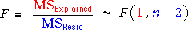 |
| When β1 is non-zero, | The F ratio will tend to be higher |
P-value
The p-value for the test is therefore the upper tail area of the F distribution — the probability of getting such a high F ratio if the null hypothesis were true.
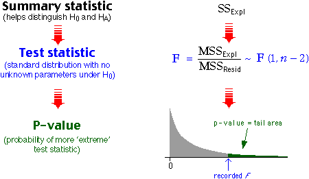
Examples
The F test is applied to a few data sets below. Read the conclusion for each carefully.
Equivalence to earlier t test
In an earlier chapter, we described a t-test to examine the same hypotheses based on the test statistic

Although it takes a considerable amount of algebra to prove, this t statistic is closely related to the F ratio in the analysis of variance test,
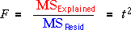
Therefore...
| Both tests result in the same p-values and conclusions. |
Components for simple linear model
In the simple linear model,
,
fitted values are obtained from the least squares estimates,

The difference between yi and the overall mean response can be written as the sum of two components,

The components can be displayed graphically as follows:

In particular, the explained components are the distances between the least squares line and the horizontal line representing the mean.
Regression model with two explanatory variables
A similar result holds for regression models with two explanatory variables,
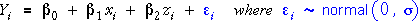 ,
where the fitted values are
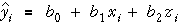
Again we can write:

The components can also be represented graphically, but this requires a 3-dimensional scatterplot of the data.
Body fat
The diagram below again shows the relationship between the body fat of 25 men and their abdomen circumference and height.
The mean is represented by a blue plane that is parallel to the x-z axes. The total components are the green vertical lines from the crosses to this plane. Drag the centre of the diagram to rotate (or use the buttons underneath).
Select Residual from the pop-up menu. The least squares equation is represented by the grey plane and the residuals are the vertical distances from the crosses to this plane. Again rotate to get a better feel for these components.
Finally select Explained by regression from the pop-up menu and rotate. The explained components are the vertical distances between the two planes at each data point.
Interpretation
| Total components | These differences reflect the total variability of the response — without taking account of either of the two explanatory variables. | |
| Explained components | These components describe how much the predicted response changes from using the least squares line (as opposed to simply using the overall mean as a prediction). | |
| Residual components | The residuals describe the extent to which the two explanatory variables fail to predict the response. Their variation is not explained by the model. |
Sums of squares
For both the simple linear model and the linear model with two explanatory variables, the individual values can be split into components.

Their sums of squares satisfy a similar equation.
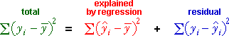
These sums of squares can be interpreted as follows:
| The total sum of squares describes the total variability of the response. | |
| The regression sum of squares describes the variability of the fitted values. This is the variability that is explained by the model. | |
| The residual sum of squares is a measure of the unexplained variability in the response. |
Coefficient of determination
The relative sizes of the regression and residual sums of squares reflect how well variation in the response is modelled by the explanatory variables — the overall strength of the relationship.
|
The proportion of the total variation that is explained by the two explanatory variables is called the coefficient of determination, R2,

The coefficient of determination is always between 0 and 1 and is interpreted in the same way as for models that were described in earlier chapters.
Unlike in the simple linear model, R2 cannot be interpreted
as the square of the correlation coefficient between y and x.
(It is however the square of the correlation coefficient between the response,
y, and the fitted values,  ).
).
Examples
The diagram below shows a few data sets, the corresponding sums of squares and the calculations for the coefficient of determination.
Use the pop-up menu on the lower right to display the different components on the scatterplots and on the dot plot on the right.
Use the pop-up menu at the top to change the data set. Observe that R2 is closest to 1 for data sets where the scatter of crosses is close to the least squares plane and the two planes (least squares plane and blue plane representing the mean) are furthest apart.
Is there a relationship?
We can use the explained and residual sums of squares to test whether there is any relationship between the response and the explanatory variables.
| Hypotheses | Meaning |
|---|---|
| neither X1 nor X2 are related to Y | |
| there is some relationship between Y and the explanatory variables |
Anova table
As in simple linear models, we again form an analysis of variance table by adding extra columns to the table of sums of squares.
The full anova table is shown below.
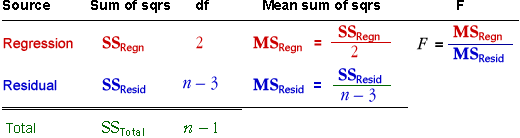
P-value
The properties of the F ratio allow it to be used as a test statistic. Its distribution is know if the null hypothesis is true (i.e. if both slope parameters are zero), but tends to be higher if one or other explanatory variable does affect the response.
The p-value for the test is the probability of getting such a large F ratio when H0 is true and is the upper tail area of the F distribution
Examples
The diagram below applies the F test to a few data sets. Observe how the F ratio is calculated and how the p-value and conclusion are obtained from the tail area of an F distribution.
Use the pop-up menu to apply the test to other data sets.
Note that there is extremely strong evidence that test marks are related to assignment marks in the Business Statistics data set, even though the relationship is not strong (R2 = 0.117). In large data sets, even weak relationships can be significant.
General linear model (GLM)
The same methodology can be used for any GLM, irrespective of the number of explanatory variables.

Sums of squares
Again the individual values can be split into components.

and their sums of squares satisfy a similar equation.
Coefficient of determination
As in the 1- and 2-explanatory variable models, the relative sizes of the regression and residual sums of squares again reflect how well variation in the response is modelled by the explanatory variables. The proportion of the total variation that is explained by the explanatory variables is called the coefficient of determination, R2,

Anova table
The component sums of squares can again be arranged in an analysis of variance table,

Note that the explained sum of squares has (p - 1) degrees of freedom since there are (p - 1) explanatory variables and hence (p - 1) slope parameters.
Are any explanatory variables related to Y?
More formally, we want to test the following hypotheses.
| Hypotheses | Meaning |
|---|---|
| 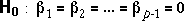 | none of the explanatory variables are related to Y |
| 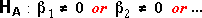 | at least one explanatory variable is related to Y |
The F ratio in the anova table can be used as a test statistic for these hypotheses.
Big F ratios provide evidence that H0 is false and hence that at least one explanatory variable is related to Y.
If the null hypothesis is true (i.e. all slope parameters are zero), the F ratio has a standard distribution called an F distribution with (p - 1) and (n - p) degrees of freedom, but it tends to be higher if any slope parameter is non-zero.
The p-value for the test is therefore the probability of getting such a large F ratio when H0 is true and can be found from the upper tail area of this F distribution.

In practice, computer software should be used to evaluate the p-value.
Water usage of production plant
A production plant cost-control engineer is responsible for cost reduction. One of the costly items in his plant is the amount of water used by the production facilities each month. He decided to investigate water usage by collecting seventeen observations on his plant's water usage and other variables.
| Variable | Description |
|---|---|
| Temperature | Average monthly temperature (â«F) |
| Production | Amount of production (M pounds) |
| Days | Number of plant operating days in the month |
| Persons | Number of persons on the monthly plant payroll |
| Water | Monthly water usage (gallons) |
Least squares resulted in the following linear model to explain water usage in terms of the four explanatory variables,
Water = 6360 + 13.9 Temperature + 0.212 Production - 127 Days - 21.8 Persons
The following anova table describes the fit of the model.
| Source | DF | SS | MS | F | p-value |
|---|---|---|---|---|---|
| Regression | 4 | 2,448,834 | 612,208 | 9.88 | 0.001 |
| Residual | 12 | 743,797 | 61,983 | ||
| Total | 16 | 3,192,632 |
From the p-value in the table, we conclude that there is extremely strong evidence that at least one explanatory variable is related to water usage.
The anova table also lets us calculate that R2 = 2,448,834/3,192,632 = 76.7% of the variation in water usage can be explained by the four explanatory variables.
Having concluded that at least one explanatory variable is related to water usage, we can investigate whether all four are needed, or perhaps a smaller number would be adequate. We described earlier how to test the significance of individual variables in the 4-variable model.
The overall F test for the whole model and the separate t-tests for individual variables complement each other.
Different interpretations of R2 and the F ratio
It is important to distinguish between the interpretations of the coefficient of determination and the F ratio.
| Used for... | Problem | |
|---|---|---|
| Summarises the usefulness of the model. Describes the proportion of overall variability that is explained by the model. | Does not however indicate whether this is statistically significant or could be simply random variation. | |
| 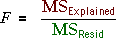 | Describes the strength of the evidence that the model is needed — i.e. the evidence that a simple model without explanatory variables is inadequate. | Does not indicate how much of the response variability is explained by the model — its value is only useful as an intermediate step for calculating the p-value for the test. |
Warning when sample sizes are high
For data sets with hundreds of observations, it is often found that the F-ratio is large, letting us conclude that at least one explanatory variable must be related to the response.
However it is possible that R2 could still be low — even 10% or less. This is not inconsistent. Such results would arise from a very weak relationship (indicated by the low R2) but a large enough sample size that we are certain that there is some relationship, however weak.
Student performance in a Business Statistics course
The data set below arose
In this example, there is extremely strong evidence that test marks are related to assignment marks in the Business Statistics data set (F = 20.237 and p-value effectively zero).
However the relationship is not strong (R2 = 0.117). In large data sets, even weak relationships can be significant.
Accuracy of slope estimates in simple linear regression
When fitting a regression model with a single explanatory variable, X, the accuracy of the least squares slope depends on the error standard deviation, σ, the sample size, n, and the spread of values of the explanatory variable,
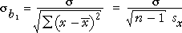
Accuracy of slope estimates with two explanatory variables
Consider the regression model
In this model, the equation for the standard errors of the two least squares estimates of β1 and β2 takes a similar form:


where r is the correlation coefficient between X and Z. The sample size, n, the error standard deviation, σ, and the standard deviations of X and Z affect the accuracy of these estimates in a similar way to simple linear regression. The model slope parameters are estimated most accurately when:
However the accuracy of b1 and b2 as estimates of β1 and β2 is also affected by r. β1 and β2 are estimated most accurately when:
As the correlation between X and Z increases, b1 and b2 also become more correlated with each other but this is less important than its effect on their separate standard deviations. (The correlation between b1 and b2 is actually -r.)
Uncorrelated explanatory variables therefore lead to the most accurate estimates of β1 and β2.
Simulation
In the diagram below, the two explanatory variables X and Z retain the same spread but their correlation can be adjusted with the slider.
Initially X and Z are moderatelly correlated. Click Accumulate and take several samples. The scatterplot on the bottom right shows the distribution of the two slope parameters. Observe that they are moderately correlated.
Adjust the slider to make the correlation between X and Z equal to 0.99 and repeat. Observe that the two slope parameters are also highly correlated and that each has a very large spread — they are very poor estimates of the underlying slope parameters, 0.5 and 0.0.
Finally make the explanatory variables orthogonal (i.e. adjust their correlation with the slider to 0.0) and repeat. Observe that the separate slope parameters are now most accurately estimated.
Variance inflation factors
The loss of accuracy of b1 and b2 due to the correlation between X and Z is quantified by their variance inflation factors (VIF), defined by:
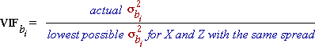
For example, if the VIF for the slope parameter associated with X is 4.0, its variance is 4 times what it would have been if X and Z were uncorrelated — i.e. its standard deviation is twice the minimum possible.
Since the formula for the actual variance of b1 is

and its minimum value arises when r is zero (uncorrelated explanatory variables), and a similar formula holds for the other slope parameter, the variance inflation factors can both be written as

(Although both VIFs are the same in models with only two explanatory variables, all VIFs are usually different in models with three or more explanatory variables.)
Illustration
The diagram below shows a normal linear model, represented by two planes ± 2σ above and below the regression plane. (95% of response values from the model would be expected to be between these planes.)
y = 2.0 + 0.4 x
The x- and z-values are represented by crosses on the x-z plane and red vertical lines above each cross between the ± 2σ planes. (Rotate with the mouse or buttons to understand this diagram better.)
At the bottom of the diagram, the distributions of the least squares slopes are shown — they are normal distributions. (We will not simulate data from the model in this diagram to check that they are correct.)
Drag the slider to adjust the correlation between X and Z. Observe that the spread of the two distributions is lowest when X and Z are uncorrelated (and hence the VIF is 1.0). When the correlation is increased, the VIF also becomes higher.
Multicollinearity and orthogonal variables
When the two explanatory variables X and Z are highly correlated, they are called multicollinear. (There is no precise definition for the term.)
Uncorrelated explanatory variables are called orthogonal. When the explanatory variables are orthogonal,
Orthogonal explanatory variables are clearly desirable, but in practice they usually only arise from designed experiments — in experiments, the values of X and Z can be chosen to be uncorrelated.
Multicollinearity complicates the interpretation of parameter estimates and hypothesis tests about linear models in ways that will be explained in later pages in this section. It is therefore worth first spending some time trying to understand how multicollinearity affects the information about the two slope parameters in regression data.
Meaning of the slope parameters
In the regression model
the slope parameter β1 describes how X affects the mean response when Z is held fixed. This is the slope of any slice through the regression plane parallel to the x-axis (i.e. at any fixed value of Z).
The plane below represents a linear model. The vertical blue plane shows a slice through this plane at a z-value that can be changed with the slider.
The 2-dimensional display at the bottom of the diagram shows this slice — how the mean response depends on X at this fixed z-value. Note that the slope of this slice is β1 = 0.10.
Information about the slope from multicollinear data
In a similar way, information about β1 from a regression data set comes from the slices through the data at different z-values. When X and Z are highly correlated, each such slice only contains a small spread of x-values and therefore holds much less information about β1 than similar slices where X and Z are uncorrelated.
As a result, β1 cannot be estimated as accurately when the data are multicollinear.
Example
The diagram below shows a data set with 200 observations. The data points within a small range of z-values are highlighted in red. In the jittered dot plot on the top right, drag up/down the red band to change the slice of points that is highlighted. Click the x-y-z rotation button (or drag to rotate manually) to also display the x-values in the data set.
The scatterplot at the bottom of the diagram shows how Y is related to X in each slice of points. (Remember that the parameter β1 is the model slope in all such slices.)
Use the slider to make X and Z uncorrelated then vary the slices through the data. Observe that most slices strongly suggest that Y and X are related — that the parameter β1 is not zero.
Finally drag the slider to the right to make X and Z multicollinear (correlation 0.99) and repeat. The slices now each contain a small range of x-values and do not strongly suggest that Y and X are related.
When the data are multicollinear, there is therefore much less information about the value of β1.
Variability of the least squares plane
Estimating the regression model parameters by least squares tries to make the residuals as small as possible, so the least squares plane is positioned as close as possible to the data points. Least squares does not care where the least squares plane is located away from the data.
When the explanatory variables are multicollinear, this means that the position of the least square plane can be very variable (i.e. the model's regression plane is inaccurately estimated) at the 'corners of the x-z plane' that are distant from the data.
Simulation
In the diagram below, data are sampled from a linear regression model where the explanatory variables, X and Z, are multicollinear.
Click Accumulate then take 10 to 20 samples. Rotate the diagram to see the variability of the least squares plane.
Click Show Min Variability to rotate the diagram to 'looking down' the scatter of data points. From this direction, it can be seen that the least squares planes look rather like flapping wings — they are much less variable near the data than in the corners corresponding to (high X, low Z) and (low X, high Z).
Which explanatory variable is more important?
When the two explanatory variables are multicollinear, it is much harder to distinguish which of the two is really related to the response — each variable can act as a kind of proxy for the other. Different combination of the two variables can have very similar exlanatory power.
Heart catheter length
In heart catheterisation, a catheter is passed through a major vein or artery from the leg into the heart. X-rays are used to position the tip of the catheter. The catheter length (cm), height (in) and weight (lb) were recorded from 12 children.
Drag one of the vertical arrows to move the least squares plane and observe the effect on the residual sum of squares. Click Least squares then repeat with the other vertical arrow.
Observe that dragging the corner that is furthest from the data has much less effect on the residual sum of squares so the position of this corner is much less accurately determined.
When dragging this corner, observe that as the coefficient of height increases, the coefficient of weight decreases. It is clear that at least one of these variables affects catheter length, but there is less information about which is important.
We could set the coefficient of either height or weight to zero and increases to the other coefficient could largely compensate.
Tests for the slope parameters
In earlier sections of this chapter we have described two different types of test for whether the slope parameters associated with X and Z are zero — t-tests for the individual parameters and a combined F-test for them both.
It is important to understand the difference between these two types of test.
T-tests
These are separate tests for the two slope parameters, each of which asks whether one slope parameter is zero. These tests both refer to the full model,
For example, the t-test for the slope parameter associated with X is comparing the hypotheses:

These hypotheses equivalently compare the two models:

Each t-test therefore asks about dropping a single variable from the full model but:
The two t-tests do not give information about whether both variables might be dropped.
F-test
On the other hand, the F-test simultaneously asks whether both parameters are zero:
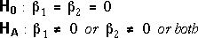
This is equivalent to comparison of the two models:

The F-test therefore assesses whether both variables can be dropped together, but:
The F-test gives no information about whether dropping a single variable (but not the other) is reasonable.
For multicollinear data
When the two explanatory variables are highly correlated, it is relatively hard to disentangle their effect on the response. It may be found that:
In terms of the tests that were described above, this corresponds to:
This may seem like a paradox but can be understood if you think carefully about the hypotheses that the tests are testing.
Heart catheter length
The diagram below shows the results of F- and t-tests applied to the heart catheterisation data that were described on the previous page.
The conclusion from the F-test is that there is strong evidence that at least one of height and weight is related to the catheter length.
However from the t-tests, we conclude that either height or weight can be dropped from the full model (leaving the other variable). Only one explanatory variable seems to be needed in the model, but there is little evidence about which is the more important of the two.
The surgeon does not need to use both height and weight to predict the required catheter length, but there is little evidence about which of the two variables will give the more accurate predictions.
Leafing-out time
In a study of genetic variation in sugar maple, the time of leafing-out of nursery seedlings in Wooster, Ohio, was measured in units of a weighted mean index in April, 1955. The seeds had been selected from native trees in the Eastern United States and Canada. Their time to leafing-out (Y = mean index) has been related to latitude north (X = °North) and the mean July temperature at the place of origin (Z = °F).
We wish to examine the relationship between Y and the explanatory variables X and Z since any connection would show that the place of origin had an effect on leafing-out time. Since this effect could only be transmitted genetically via the seeds, it would imply a genetic difference between plants in the different areas. (Click on crosses to see the source of each batch of seeds.)
The F-test gives strong evidence that at least one of the explanatory variables is related to leafing-out time so we can conclude that there is a genetic difference between the seeds.
In this example, the t-tests give information about which of the explanatory variables is more important. If temperature is in the model, there is moderately strong evidence that latitude is also needed (from the top t-test). However if latitude is in the model, there is no evidence that temperature is also needed (from the second t-test). We can therefore conclude that latitude is the more important variable in explaining leafing-out time.
It is also important to realise that the t-test for each explanatory variable can give different results, depending on whether or not the other explanatory variable is also in the model.
T-test for X in full model
This is a t-test that is reported by most statistical software in the output from fitting a linear regression model with both explanatory variables X and Z. It compares the two models:

T-test for X in partial model (without Z)
There is another t-test for X that is used in the simple linear regression model that does not involve Z. It compares the models:
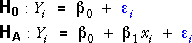
It is important to realise that these two t-tests can give different results. (And similarly for the corresponding two tests about Z.) When X and Z are multicollinear, X can explain a lot of variation in the response when Z is not in the model, but little extra variation in the response when Z is already there.
All possible tests for the slope parameters
The F-test and the four possible t-tests are shown in the diagram below. The tests compare the models to which the coloured arrows point.
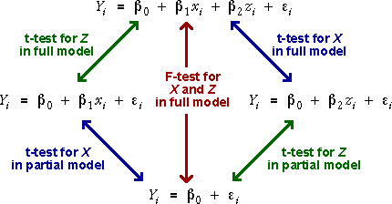
Leafing-out time
The diagram below shows the leafing-out times that were described on the previous page. On the left, the full model involving both the latitude and July temperature of the seed sources is displayed. On the right, the simpler model involving only latitude is shown.
The t-tests under the diagram test whether latitude is needed in these two models. Observe that latitude is far more significant (lower p-value) when temperature is not in the model.
Select Temperature from the pop-up menu. The model displayed on the right changes to the model involving only temperature. Observe again that the evidence is much stronger for including temperature in the model if latitude is not present.
Adding the two variables sequentially
In the previous section, we used an F test to compare the full regression model involving both X and Z, and a 'regression model' with no explanatory variables.

There is an alternative to this 'all-or-nothing' test for both explanatory variables simultaneously. There are two different ways that the explanatory variables can be added sequentially to the regression model with no explanatory variables.
The two possibilities are adding the variables in the order:
Whatever the order,
Each additional variable gives the model more flexibility and allows the regression plane to fit closer to the data.
Heart catheter length
In heart catheterisation, a catheter is passed through a major vein or artery from the leg into the heart. X-rays are used to position the tip of the catheter. Should surgeons estimate the length (cm) of catheter that will be required from the height (in) of children, their weight (lb), or both? Catheter length (cm), height (in) and weight (lb) were recorded from 12 children.
Initially the least squares fit of a model involving no explanatory variables is shown. The plane simply predicts the catheter length to be the sample mean catheter length from the 12 children and is the same whatever the values of the explanatory variables. (Click the y-x and y-z rotation buttons to verify this.)
Use the checkboxes to check that any time a variable is added to the model, the plane gets closer to the data points. (More precisely, the residual sum of squares reduces.)
Representation of models with only one explanatory variable
The least squares fit of a regression model with only a single explanatory variable, such as

corresponds to a straight line on a 2-dimensional scatterplot of the data.
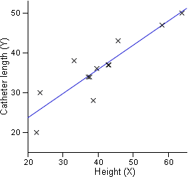
This least squares line also corresponds to a plane in a 3-dimensional scatterplot of x, y and z with z-slope equal to zero.
Heart catheter length
Select only the check-box for Height in the diagram above to show the least squares fit for the model with only the explanatory variable Height. Click the y-x rotation button to verify that this appears as a straight line in the 2-dimensional scatterplot of Catheter length against Height, then click the y-x-z rotation button to show it as a plane in the 3-dimensional scatterplot.
Similarly investigate the model with only explanatory variable Weight.
Components and sums of squares for Y vs X and Z
In an earlier section, we showed that the differences between the response values and their mean can be split into two components,

The sums of squares of these components satisfy a similar relationship,
Sequential components and sums of squares
We now consider how the fit of the model improves when we add the two explanatory variables in the order X and then Z. Using the notation
| 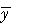 | mean response (fitted value for model with no explanatory variables) |
| fitted value for model with only X | |
| fitted value for model with both X and Z |
we can split the total component into three parts,

Provided the models are all fitted by least squares, the sums of squares of the components satisfy a similar relationship,
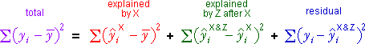
Interpreting the sums of squares
| The total variability of the response. | |
| The response variability that is explained by X. | |
| The extra response variability that is explained by adding Z to the model that already contains X. | |
| The variability in the response that is unexplained by the model with both X and Z. |
Different order of adding variables
There are two different orders of adding the explanatory variables to the model, so there are two different ways to define the components and their sums of squares. The total sum of squares can therefore be written in two alternative ways:

Note that the green sums of squares summarise the effect of adding the variables to the model that already has the other variable, so they may differ from the red sums of squares.
Body fat
The diagram below shows the percentage body fat, abdomen circumference and height of 25 men.
Use the Component pop-up menu on the top right to display the four components corresponding to adding the variables in the order abdomen (X) then height (Z). The components themselves are shown in a jittered dot plot on the right and their sizes are summarised by the sums of squares at the bottom.
| Note that the sums of squares explained by X and by Z after X both summarise the 'distance between' two least squares planes. |
Use the Order pop-up menu on the top left to change the order of adding the variables. Observe that the components (and their sums of squares) explained by Z and by X after Z are different from those from the other ordering — they refer to the distances between different least squares planes.
Sum of squares explained by X and explained by X after Z
We again emphasise that these two sums of squares can be different. Adding the variable X to the model with no variables usually explains more variability than adding it to a model that already contains Z.
The higher the correlation between X and Z, the greater the difference between these sums of squares.
Leafing-out time of maples
The diagram below shows an index of the leafing-out time of batches of maple seedlings grown in Wooster, Ohio. The explanatory variables are the latitude (X° North) and mean July temperature (Z° F) of the place of origin of the seeds. A relationship would prove that there is a genetic difference between seeds from the different locations.
Use the Component pop-up menu to display the component explained by X, and the component explained by X after Z. Observe that the sum of squares explained by X if much lower when Z is already in the model. (The sums of squares tables at the bottom are a concise way to describe this.)
Use the Sum of sqrs for: pop-up menu to see the same effect for the variable Z.
Anova table
The previous page showed that the total sum of squares can be split in two ways (corresponding to the two orders of adding the explanatory variables, X and Z). Each set of sums of squares can be presented in a sums of squares table that can be extended in the usual way with mean sums of squares and F-ratios to give an analysis of variance table.
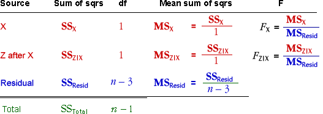
There is another similar anova table corresponding to the other order of adding the explanatory variables.
Relationship to anova table for combined test of both X and Z
In an earlier section, an analysis of variance table was used for a combined test about whether X and Z were related to the response.
This anova table and the two sequential anova tables that separate out the effects of the two explanatory variables (in different orders) contain the same total and regression sums of squares. The main difference is that in the sequential anova,
The regression sum of squares (with 2 degrees of freedom) is split into two sums of squares that each have 1 degree of freedom.
F tests
In each of the two sequential anova tables, the final F ratio (FX|Z or FZ|X) can be used in an F test for whether the final variable added (X or Z) is important. For example, FX|Z is compared to the F distribution (1, n - 3) degrees of freedom to test the hypotheses

The p-value is the upper tail area of this F distribution.
F and t tests
We described earlier t-tests for hypotheses such as these. For example, the t-test for β1 corresponding to the hypotheses shown above is based on the test statistic,
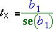
Since the F and t tests are assessing the same hypotheses, it should come as no surprise that they result in the same p-value and conclusion. Indeed, theory can prove that FX|Z is equal to the square of tX .
Other F tests
The first line in each anova table also provides an F ratio (FX or FZ ) that can be used for a test. However these tests are rarely useful unless it has already been concluded (from FZ|X or FX|Z ) that the other variable is not needed.
Examples
The diagram below shows a few data sets involving correlated explanatory variables.
For each data set, examine the two anova tables — the pop-up menu Fitting order switches between them. From the highlighted p-values associated with (X after Z) and (Z after X), you can assess whether there is evidence against dropping the individual variables from the full model. Note that the F-ratios are the square of the t statistics that are used to test the same hypotheses.
(The top F ratios and their p-values are not examined unless the highlighted F ratio in the same table shows that the other variable can be dropped from the full model.)
Benefits from uncorrelated explanatory variables
Uncorrelated explanatory variables are called orthogonal. We mentioned earlier that orthogonal explanatory variable result in more accurate estimates of the two slope parameters. With orthogonal explanatory variables,
A further benefit from orthogonal explanatory variables is that the least squares slopes are easier to interpret:
Finally, the two sequential anova tables contain the same sums of squares when X and Z are orthogonal.
With orthogonal explanatory variables therefore, a single anova table is sufficient and we do not need to worry about the order of adding the explanatory variables,
Note that we can use the two F ratios in this table to test the significance of the two explanatory variables in either order. (If the explanatory variables had been correlated, the upper F ratio should only be tested after you concluded that the other variable could be omitted from the model.)
Illustrations
The diagram below shows simulated data from a regression model. The slider changes the values of the explanatory variables (X and Z) to adjust their correlation.
Observe initially that the slope coefficients for X are different in the least squares fit of the full model and that of the model with only X. Use the slider to make X and Z orthogonal and observe that the two slope coefficients for X are now equal.
The next simulation is similar but shows the two sequential sums of squares tables corresponding to the two orders of adding X and Z.
Observe initially that the sums of squares in the two tables are different. Use the slider to make X and Z orthogonal and observe that the sums of squares in the tables are now equal.
Observational studies and experiments
We have shown that orthogonal explanatory variables result in the most accurate estimates of the slope parameters and also that the resulting parameter estimates and anova table are easier to interpret.
In an observational study, the values of X and Z are usually correlated — we have no control over their values so it is unlikely that their correlation will be exactly zero, even if it is sometimes low.
In an experiment however, the researcher can often choose the values of the explanatory variables. Good experimental design selects the values of X and Z to make them orthogonal.
Simple orthogonal design
The simplest way to ensure that the explanatory variables are uncorrelated is to use only a small number of different values for each of X and Z, then to make an equal number of response measurements at each possible combination of levels of these variables.
Examples
In an experiment, an entomologist recorded energy expenditure (joules/sec) for bees drinking water with different sucrose concentrations (percentage) and at different temperatures. The researcher decided to conduct the experiment using three different temperatures (20, 30 and 40 degrees C) and three different sucrose concentrations (20, 40 and 60%).
By measuring energy expenditure from the same number of bees at each combination of temperature and sucrose (three replicates), the two explanatory variables were guaranteed to be orthogonal.
| Temperature (degrees C) | ||||
|---|---|---|---|---|
| 20 | 30 | 40 | ||
| Sucrose concentration (%) |
20 | 3.1, 3.7, 4.7 | 6.0, 6.9, 7.5 | 7.7, 8.3, 9.5 |
| 40 | 5.5, 6.7, 7.3 | 11.5, 12.9, 13.4 | 15.7, 14.3, 15.9 | |
| 60 | 7.9, 9.2, 9.3 | 17.5, 15.8, 14.7 | 19.1, 18.0, 19.9 | |
The diagram below shows an analysis of these data.
Note that there is only a single anova table, and the two p-values can be used to test whether the corresponding variables can be dropped from the full model.
Use the pop-up menu to see another experimental data set and its analysis.
Other orthogonal designs
It is not essential to record the same number of response observations at every combination of X and Z for the explanatory variables to be orthogonal although there is rarely any reason to choose other orthogonal designs.
X and Z are orthogonal if the spread of observations over Z is the same for each level of X.
Other orthogonal designs for bee energy expenditure
The following designs are all orthogonal.
| Temperature | ||||
|---|---|---|---|---|
| 20 | 30 | 40 | ||
| Sucrose | 20 | 3 | 3 | 3 |
| 40 | 3 | 3 | 3 | |
| 60 | 3 | 3 | 3 | |
| Temperature | ||||
|---|---|---|---|---|
| 20 | 30 | 40 | ||
| Sucrose | 20 | 5 | 5 | 5 |
| 40 | 2 | 2 | 2 | |
| 60 | 2 | 2 | 2 | |
| Temperature | ||||
|---|---|---|---|---|
| 20 | 30 | 40 | ||
| Sucrose | 20 | 4 | 2 | 2 |
| 40 | 6 | 3 | 3 | |
| 60 | 4 | 2 | 2 | |
Advantage of equal replicates
The standard error of each regression slope estimate depends on the standard deviation of the corresponding explanatory variable (among other things),


where r is the correlation coefficient between X and Z. When comparing orthogonal designs (with r = 0), the standard errors of the slopes are lowest when the standard deviations of X and Z are highest. Concentrating the design on one or two levels of X or Z decreases their standard deviations, so:
| A design with equal replicates is usually best. |
This page gives some general results that extend analysis of variance methods to test hypotheses about more complex models.
Comparing the fit of three models
The sequential sums of squares that were described earlier in this section actually describes the difference between the fit of three models:
| Model | Explanatory variables |
Model | Fitted values (predicted response) |
No of parameters |
|---|---|---|---|---|
| A | None | 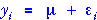 | 1 | |
| B | X | 2 | ||
| C | X & Z | 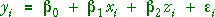 | 3 |
We now generalise this to any sequence of general linear models of increasing complexity — each model adds to the flexibility of the previous model with extra parameters.
| Model | Fitted values (predicted response) |
|---|---|
| A. Simplest model | |
| B. More complex model | |
| C. Most complex model | 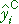 |
Provided each model has at least the flexibility of the previous model in the sequence, each can provide fitted values that are closer to the observed response values than the previous model.
| improvement of model B over model A |
improvement of model C over model B |
residual (unexplained by most complex model) |
||||
Provided parameter estimates and fitted values for all three models are obtained by least squares, the sums of squares of the components satisfy a similar relationship:
| SSTotal | SSB|A | SSC|B | SSResid | |||
| 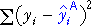 | 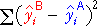 | 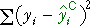 |
The component sums of squares are sequential sums of squares and can be used to compare the fit of the models with an analysis of variance test.
Degrees of freedom
We mentioned above that the sequence of models should be of increasing complexity, with each model allowing the previous model as a special case.
The degrees of freedom for the sum of squares comparing two models equals the difference in the number of parameters.
Analysis of variance table
The sums of squares and their degrees of freedom are again arranged in a table with extra columns:
If model A is the simplest model with no explanatory variables, the full anova table is:

The F ratios on the right can be used to test whether there is any improvement when moving from any model to a more complex one.
These general ideas will become clearer when we examine special cases in the next section.
Are data linear?
Our previous analysis of the relationship between a response variable, Y, and a numerical explanatory variable, X, involved a normal linear model with

We will now use analysis of variance to examine whether the assumption of linearity is appropriate.
Teeth wear in monkeys
The scatterplot below shows the crown length of the maxillary deciduous central right incisor, one of the upper cutting teath, of 15 Macaca mulatta monkeys. The crown length decreases with age due to wear.
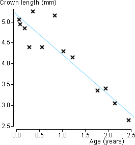
The least squares line is drawn on the scatterplot. There is a slight suggestion that crown lengths may be underestimated around age 1 and overestimated around age 2.5.
Is this suggestion of nonlinearity just caused by random variation?
Quadratic model
To assess linearity, we can consider a more general model that allows for some curvature. The simplest such model adds a quadratic term to the linear model,

We therefore consider a sequence of three potential models, each of which can be fitted to the data by least squares and provides fitted values.
| Model | Fitted values (predicted response) | |
|---|---|---|
| Constant | ||
| Linear model | ||
| Quadratic model |
A few comments are made here about the notation and models:
Components
Using this sequence of models of increasing complexity, we can identify how the different terms in the model improve its fit.
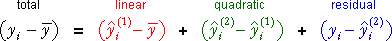
Sums of squares
The sums of squares of these three components obey a similar relationship when the models are fitted by least squares:

The diagram below helps to interpret the three components (and their sums of squares).
Teeth wear in monkeys
The scatterplot below shows the relationship between the crown length and age of the monkeys. The overall mean (grey), the least squares line (light blue) and best-fitting quadratic (pink) are also shown on the diagram.
Click the cross near the middle at the top of the scatterplot. Observe how the three components add to the total component. (The same relationship holds for the other crosses, but most involve a mixture of positive and negative components so the visual effect is weaker.)
Use the pop-up menu to display the linear, quadratic and residual components for all data values together on the scatterplot.
Component sums of squares for the quadratic model
The three components of the total sum of squares reflect different aspects of the data set.
| 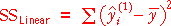 | Describes how much linear trend is in the data. |
| Describes how much curvature is in the data. | |
| Describes how far the data lie from the best quadratic curve — the unexplained variation. |
In particular, the quadratic sum of squares holds information about the curvature in the data.
Illustration
The scatterplot on the left below shows an artificial data set. The jittered dot plots on the right show the different components — click on any plot to display these components on the scatterplot.
The two sliders alter the data set, keeping the total sum of squares unchanged.
Analysis of variance table
An analysis of variance table can be formed with sequential sums of squares from the following three models of increasing complexity.
| Model | Fitted values (predicted response) | |
|---|---|---|
| Constant | ||
| Linear model | ||
| Quadratic model |
Since each model has one more parameter than the previous model in the sequence, the two sums of squares for adding linear and then quadratic terms each have 1 degree of freedom.
F ratio and p-value
Testing whether there is curvature in the quadratic model is equivalent to testing whether the coefficient of x2 is zero,

This test is based on the ratio of the mean quadratic and mean residual sums of squares in the anova table. This F ratio has an F distribution when H0 is true — i.e. when the underlying model is linear,

The F distribution does not involve unknown parameters, so F can be used as a test statistic.
High values of the F ratio give evidence of nonlinearity, so the p-value is the upper tail area from the F distribution.
If it is concluded from the F ratio for the quadratic term that there is no curvature, it is then possible to use the F ratio for the linear term to test whether there is any relationship at all.
Illustration
The diagram below shows the calculations for an artificially generated data set.
The p-value for the test is the upper tail-area of the F distribution and is usually evaluated using a computer. (It can also be approximated using printed tables of the F distributions.)
Click Another Data Set several times and observe that all p-values between 0 and 1 are equally likely (since the null hypothesis is initially true).
Use the slider at the top right to change the model to one with curvature. Click Another Data Set a few more times and observe that the F-ratio tends to be larger and the p-value closer to zero.
P-values near zero therefore give evidence of curvature.
Examples
Analysis of variance is used to test for curvature in several data sets below. Read the conclusion for each test carefully.

Nonlinear regression with polynomials
We will now consider the use of a polynomial to model a nonlinear relationship between a single explanatory variable, X, and the response, Y.
For models of this type, we are interested in using the lowest possible degree of polynomial, but it makes no sense to have any power of x without all lower powers.
The only meaningful order of adding variables is by increasing powers of x.
It is possible to decide on the lowest order polynomial that fits the data from the resulting single anova table — the best degree of polynomial corresponds to the highest-order term that is significantly different from zero. (A p-value less than 0.05 is often used.)
Warning
A polynomial of degree 4 or higher might be found to fit the data best, but you will often find that it behaves in unreasonable ways outside the range of data that were collected. High-degree polynomials should never be used for extrapolation.
Some other form of nonlinear function should always be considered before using high-order polynomials.
For example, consider a nonlinear transformation of either X or Y.
Onion yield
The data below arose from an experiment in Purnong Landing, South Australia involving production of white Spanish onions. The explanatory variable is the areal density of planting (plants per square metre) and the response is onion yield (grams per plant).
A polynomial of degree 6 has been fitted to the data and is shown on the scatterplot in dark blue.
The terms of degree 6, 5 and 4 have high p-values, so we would conclude that a cubic polynomial (of degree 3) is adequate to model the data. Drag the red arrow up to display the cubic curve.
The display also shows the model with a polynomial whose degree is one lower. The distances between these two curves at the data points is the difference between the fitted values and are shown in red. (They are only clearly visible when the power is low.) The sum of squares of these red distances is the sequential sum of squares for the highest-order term.
Observe that when the power of the polynomial is increased to 5 or 6, the curve remains fairly smooth over the range of densities used in the experiment, but fluctuates wildly at extreme densities and should not be used for extrapolation.
Traffic fatal crashes in New Zealand
The next data set gives the number of fatal vehicle crashes in New Zealand per 100,000 population between 1970 and 2005.
In this example, the term with power 6 is highly significant (p-value is approx 0). Polynomials of such high degree should be avoided and different methods should be used for such time series data.
Testing for curvature in the presence of other explanatory variables
A similar method can be used to test for curvature in X when there are other variables in the model.
We start by examining whether there is curvature in one variable, X, when two explanatory variables, X and Z, may affect the response. We consider the sequence of models
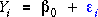


Each additional term allows the residual sum of squares to be decreased. The following equation splits the difference between the values and their overall mean into components corresponding to the changes caused by increasing the complexity of the models.

In this equation, the superscripts 'L' and 'Qx' denote fitted values from the model with only linear terms in X and Z and the model with an extra quadratic term in X.
As in other sequences of models of increasing complexity, the sums of squares of these components satisfy a similar equation and form the basis of an analysis of variance table.

Leafing-out time of maples
The diagram below shows an index of the leafing-out time of batches of maple seedlings grown in Wooster, Ohio. The explanatory variables are the latitude (X° North - 30) and mean July temperature (Z° F - 60) of the place of origin of the seeds. A relationship would prove that there is a genetic difference between seeds from the different locations.
Use the pop-up menu to display the different components on the diagram and highlight their sum of squares. In this diagram, the grey plane represents the overall mean response, the blue plane is the least squares plane for the model with no curvature, and the red surface (shown as a grid) is the least squares surface for the model with curvature in X.
Observe that each component is the difference between the fitted values of two models.
In the following diagram, these sums of squares are shown in an analysis of variance table.
Although the curvature of X in the least squares line is quite noticeable, the p-value associated with the quadratic term in X is 0.1418, so we would conclude that there is no evidence in the data that the relationship is nonlinear.
Testing curvature of X and Z
To extend the analysis of variance approach to models with quadratic terms in both X and Z, it is necessary to take into account the order of adding the two quadratic terms. For example, adding the quadratic term in X before the quadratic term in Z corresponds to the following sequence of models.


Adding the quadratic terms in the opposite order can result in different sums of squares for the two quadratic terms.
This is simplified if the two explanatory variables, X and Z are orthogonal in a designed experiment. Then the explained sum of squares for the quadratic term in X is the same whether or not the quadratic term in Z is already in the model. The following example shows a data set where X and Z are orthogonal in this way.
Energy expenditure of bees
In the experiment with bees on the previous page, there were three observations at each combination of three levels of temperature and sucrose, so temperature and sucrose are orthogonal. (The quadratic terms in temperature and sucrose are also orthogonal due to the design.)
Since the order of adding the quadratic terms does not alter their sums of squares, only a single anova table is needed. Observe that the p-values for the quadratic terms are identical to those from the t-tests on the previous page.
We therefore again conclude that there is moderately strong evidence of nonlinearity in the relationship between energy expenditure and temperature, but no evidence of nonlinearity in the effect of sucrose.
Testing for interaction
We end this section with consideration of a linear model in which variables X and Z interact in their effect on Y.

As in all other general linear models, there are two approaches to hypothesis testing.
These approaches are illustrated in the following example.
Energy expenditure of bees
In an experiment, an entomologist recorded energy expenditure (joules/sec) for bees drinking water with different sucrose concentrations (%) and at different temperatures. We will test whether there is interaction between sucrose and temperature.
Comparing models with the residual sum of squares
The parameters of general linear models (GLMs) are chosen to minimise the sum of squared residuals — by least squares. The residual sum of squares is also a good way to compare alternative models.
For two models with the same number of parameters, the model with the smaller residual sum of squares is better.
Unfortunately, the residual sum of squares cannot be used to directly compare models with different numbers of parameters. Removing explanatory variables from a model cannot decrease the residual sum of squares and almost always increases it. (It is theoretically possible for the residual sum of squares to stay the same, but this never happens in practice.)
Even if an explanatory variable is not related to the response, dropping it from the model increases the residual sum of squares.
Identifying the least important variable
The decreases in the residual sum of squares that would occur from dropping the individual variables from a model are called the marginal sums of squares for the variables. They are also called Type 3 sums of squares.
Since all such models have the same number of parameters (the number for the full model minus one), the best explanatory variable to drop from the full model is the one with smallest marginal sum of squares. The relative sizes of these sums of squares is closely related to the p-values for testing whether the coefficients are zero.
The variable with smallest marginal sum of squares also has the highest p-value.
If a variable is to be removed from the full model, we should choose the variable with smallest marginal sum of squares and highest p-value. Both the p-value and the marginal sum of squares are helpful when deciding whether this is advisable.
Body fat
In this example, 13 explanatory variables were used to model percentage body fat. The diagram below shows the least squares coefficients, p-values for testing whether the parameters are zero and the Type 3(marginal) sums of squares.
Dropping any explanatory variable from the model would increase the residual sum of squares — the Type 3 sums of squares give the increase and are all positive.
Click the checkboxes against the explanatory variables one-at-a-time to remove them from the model. Observe that all 12-variable models have higher residual sums of squares than the full 13-variable model and that the Type 3 sums of squares give the increases from removing the variables.
Since the variable knee has smallest Type 3 sums of squares, the model without knee has the smallest residual sum of squares of the models with 12 explanatory variables.
Since the p-value for knee is well over 0.1 (it is the highest of the p-values), we conclude that there is no evidence that this variable is needed.
You might also note that the p-values and Type 3 sums of squares for the other variables change when a variable is removed from the model — they now describe the effect of deleting variables from the 12-variable model, not the full 13-variable model. The differences are highest when important variables such as abdomen are taken out of the model.
Backward elimination
In the previous page, we saw that the marginal sums of squares and associated p-values could be used to decide on which variable, if any, should be removed first from the full model. This process can be continued, successively dropping the remaining variable with lowest marginal sum of squares until all remaining variables have 'small enough' p-values. This procedure is called backward elimination of variables.
The 'stopping rule' for this iterative procedure is often when the remaining variables have p-values greater than 0.05.
Note that the marginal sums of squares and p-values change each time a variable is dropped. They must be re-calculated at each step of the procedure.
Forward selection
This is a similar procedure to backward elimination, but starts with a model with no explanatory variables and adds variables one at a time. At each step, the variable that reduces the residual sum of squares most is added — this is equivalent to adding the variable that would have the lowest p-value (most significant) if it was added to the model.
The procedure is stopped when the p-values for the remaining variables that are not in the model are all high — say above 0.05.
Stepwise variable selection
It is occasionally found that after several variables have been deleted in backward elimination, the p-value to add one of the deleted variables has now dropped below 0.05 and could be added back into the model.
Stepwise variable selection allows this by alternating between steps of backward elimination (provided at least one variable in the model has a high enough p-value) and forward selection (provided at least one variable not in the model has a low enough p-value).
Forward selection for body fat data
The diagram below is similar to the one on the previous page. It initially gives the p-values and Type 3 (marginal) sums of squares for the full model with all 13 explanatory variables.
As before, knee is the variable with smallest Type 3 sum of squares, so click its checkbox to remove it from the model. The p-values and Type 3 sums of squares are recalculated for the 12-variable model without knee.
Now remove the variable with the smallest remaining Type 3 sum of squares and continue until all remaining variables in the model have p-values lower than 0.05.
The model with weight, abdomen, forearm and wrist has a residual sum of squares that is only a little higher than that of the full 13-variable model.
Forward selection for body fat data
The diagram below is again similar, but it also shows the Type 3 sums of squares and p-values for adding variables.
Click the button Remove all. The red p-values and Type 3 sums of squares are those for adding the variables. Observe that height is the only variable that is not significantly important — all other variables would be significantly related to body fat if they were the only variable in the model.
Abdomen is the variable with highest Type 3 sum of squares. Click its checkbox to add it to the model — it is the 1-variable model with the smallest residual sum of squares. Observe that the other p-values and Type 3 sums of squares change. Height has now become important whereas forearm has lost its importance.
Continue adding the variables with highest Type 3 sum of squares until all variables that are not in the model (the red p-values) are all greater than 0.05.
Again the model with weight, abdomen, forearm and wrist is selected as 'best'.
Stepwise variable selection
For the body fat data, the p-values for all variables that were added in forward selection remained less than 0.05, and the p-values for variables that were deleted in backward elimination similarly remained greater than 0.5, so there was no need to alternate between forward selection and backward elimination.
Better methods for variable selection
The above iterative procedures for variable selection were historically developed to avoid fitting all possible subsets of variables. For example, in the body fat example with 13 explanatory variables, there are 1,716 different models with 6 explanatory variables. Unfortunately, none of the iterative procedures are guaranteed to find the best (minimum residual sum of squares) of these 1,716 six-variable models, though the chosen six-variable model will have a residual sum of squares close to the minimum.
Read a textbook about multiple regression for better methods of variable selection.
Uncorrelated explanatory variables and experiments
When the explanatory variables are correlated with each other, as in the Body Fat data, the least squares coefficient for any variable depends on which of the other variables are in the model. Its marginal sums of squares similarly change as other variables are added or deleted from the model. This makes the data much harder to analyse.
In experimental data, it is possible to choose the values of the explanatory variables to make them uncorrelated. The simplest way to do this is to decide on a small number of values (often 2 or 3) for each variable and conduct an equal number of runs of the experiment (often 1) for every possible combination of these values.
If the explanatory variables are uncorrelated, the least squares estimate and marginal sum of squares for each variable is the same irrespective of the other variables in the model.
Plasma etching
The following data came from an industrial experiment that was conducted when developing a nitride etch process on a single-wafer plasma etcher. The process uses C2F6 as the reactant gas. Four numerical explanatory variables were varied in the experiment, with each taking one of two values. All combinations of values for the four explanatory variables were used once giving 24 = 16 runs of the experiment.
| Response | ||
|---|---|---|
| Etch rate | Etch rate for silicon nitride, measured in Å per minute | |
| Explanatory variables | ||
| A-c gap | Anode-cathode gap, either 0.8 cm or 1.2 cm | |
| Pressure | Pressure in the reactor chamber, either 4.5 mTorr or 550 mTorr | |
| Gas flow | Flow rate of C2F6, either 125 SCCM or 200 SCCM | |
| Power | Power applied to the cathode, either 275 W or 325 W | |
Since each combination of values for the explanatory variables was used once, the explanatory variables are uncorrelated.
Click checkboxes to delete variables and observe that the least squares estimates for the other parameters remain the same, as do their Type 3 sums of squares.
(However the reported standard errors and p-values do change since they use the mean residual sum of squares to estimate of σ.)
Variance inflation factors
We earlier described the use of variance inflation factors in linear models with two explanatory variables, X and Z, to quantify the loss of accuracy of each least squares coefficient due to correlation between the explanatory variables,
A similar definition is used when there are more explanatory variables — it is the ratio of the actual variance of the least squares coefficient with the value that would have arisen if the explanatory variables had the same spread but were uncorrelated.
For example, if the VIF for the parameter associated with X is 4.0, its variance is 4 times what it would have been if X had been uncorrelated with the other explanatory variables — i.e. its standard deviation is twice the minimum possible.
Some authors suggest that a VIF of 10 or higher is 'of concern'. It certainly means that there will be problems interpreting the effect of explanatory variables — least squares coefficients could vary greatly depending on the other variables in the model.
For observational data, multicollinearity cannot usually be avoided, but deletion of some variables from the model will usually decrease the VIFs.
Body fat
In data from observational studies, such as the Body Fat data, the explanatory variables are often highly correlated. The correlations between the variables are shown below, with correlations between explanatory variables over 0.8 highlighted in bright red.
Fat 1.00
Age 0.29 1.00
Wt 0.61 -0.01 1.00
Ht -0.09 -0.17 0.31 1.00
Neck 0.49 0.11 0.83 0.25 1.00
Chest 0.70 0.18 0.89 0.13 0.78 1.00
Abdomen 0.81 0.23 0.89 0.09 0.75 0.92 1.00
Hip 0.63 -0.05 0.94 0.17 0.73 0.83 0.87 1.00
Thigh 0.56 -0.20 0.87 0.15 0.70 0.73 0.77 0.90 1.00
Knee 0.51 0.02 0.85 0.29 0.67 0.72 0.74 0.82 0.80 1.00
Ankle 0.27 -0.11 0.61 0.26 0.48 0.48 0.45 0.56 0.54 0.61 1.00
Biceps 0.49 -0.04 0.80 0.21 0.73 0.73 0.68 0.74 0.76 0.68 0.48 1.00
Forearm 0.36 -0.09 0.63 0.23 0.62 0.58 0.50 0.55 0.57 0.56 0.42 0.68 1.00
Wrist 0.35 0.21 0.73 0.32 0.74 0.66 0.62 0.63 0.56 0.66 0.57 0.63 0.59 1.00
Fat Age Wt Ht Neck Chest Abdom Hip Thigh Knee Ankle Bicep Fore Wrist
In particular, Weight and Hip have high correlations with the other explanatory variables. The diagram below shows the variance inflation factors for the explanatory variables. Observe that Weight and Hip have the highest VIF values.
Three variables have VIF over 10, so we should be aware that their coefficients could change substantially depending on the other explanatory variables in the model.
Marginal (Type 3) sums of squares
The marginal sums of squares are the changes to the residual sum of squares caused by deleting the individual variables from the full model. The diagram below illustrates the models being compared by the marginal sums of squares when there are four explanatory variables.

Note that the marginal sums of squares cannot tell you anything about the fit of models with fewer than three explanatory variables.
Sequential (Type 1) sums of squares
Sequential sums of squares also describe the effect on the residual sum of squares of changing the explanatory variables in the model. They give the reductions in the residual sum of squares as the variables are added in order, starting from the model with no explanatory variables.

The sequential sums of squares are specific to a particular order of adding the explanatory variables.
In later sections, we will show applications where only one such sequence is appropriate.
For example, it sometimes does not make sense to add a variable V unless variables X, Z and U are already in the model.
Relationship between sums of squares
The fitted values for the model with no explanatory variables are all equal to the response mean. The residual sum of squares for this model is therefore equal to the total sum of squares.
The sequential sums of squares are the reductions in this value as the variables are added in turn to the model, leaving eventually the residual sum of squares for the full model.
Equivalently, we could start from the full model with all explanatory variables; the sequential sums of squares are the increases to this as variables are dropped from the model in turn, leaving eventually the residual sum of squares for the model with no explanatory variables — i.e. the total sum of squares.
The residual sum of squares from the full model plus all the sequential sums of squares therefore equals the total sum of squares.
Sum of squares table
Sequential sums of squares are usually presented in a table called a sum of squares table.
A column is usually added giving the degrees of freedom for the sums of squares. Since the sequential sums of squares that we have described above each involve removal or addition of a single explanatory variable, they all have 1 degree of freedom. The total degrees of freedom are n - 1 and the residual degrees of freedom satisfy the equation,

Oxygen uptake when running
Oxygen uptake rates were measured from 17 men aged between 40 and 49 who were involved in a physical fitness programme at North Carolina State University.
| Response | |||
|---|---|---|---|
| Oxygen uptake | Y | Oxygen uptake rate (ml per kg body weight per minute) | |
| Explanatory variables | |||
| Weight | X | Body weight (kg) | |
| Running time | Z | Time to run 1.5 miles (minutes) | |
| Resting heart rate | U | Heart rate when resting | |
| Running heart rate | V | Heart rate at same time oxygen uptake was measured | |
The table below shows the sequential sums of squares when the variables are added to the model in the order Weight, Running time, Resting heart rate, and Running heart rate.
Drag the red arrow up to remove variables from the model. Observe that the sequential sums of squares give the increase in residual sum of squares from deleting variables.
The stacked bar chart on the right shows the changes to the residual sum of squares graphically. It also shows how the total sum of squares that is split into explained and unexplained components. The coefficient of determination, R2, is the proportion of the total sum of squares that is explained by the explanatory variables in the model.
We now give two additional ways to interpret the sequential sums of squares.
Sequential changes to residuals
As each explanatory variable is added to the model in turn, the residuals get closer to zero — their sum of squares becomes smaller. The sequential sum of squares for a variable Z can therefore be written in the following form where the superscripts ±Z refer to whether or not variable Z is in the model. (There may be additional explanatory variables in the model but our notation below does not mention them.)
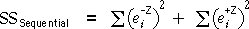
It is difficult to prove, but the sequential sum of squares can also be expressed in terms of the changes to the individual residuals from adding the variable Z.

Sequential changes to fitted values
In similar way, as each explanatory variable is added to the model in turn, the fitted values get closer to the observed response values. Since the the fitted values and residuals are closely related,
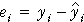
it follows that the sequential sum of squares is also the sum of squares of the changes to the fitted values from adding Z,
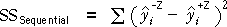
Oxygen uptake when running
The diagram below shows how the fitted values change as variables are added to the model in the order Weight, Running time, Resting heart rate, and Running heart rate.
Click the red arrows to calculate the difference between the fitted values of successive models. The sequential sum of squares from adding the variable is the sum of squares of these differences.
Select Residuals from the pop-up menu and again click red arrows. The sequential sum of squares can either be found from the difference in residual sum of squares or as the sum of squares of the individual differences.
Graphical display of sequential sums of squares
The above result allows us to represent sequential sums of squares graphically for many models by connecting the fitted values from the models with and without the variable on a plot of the data. The sequential sum of squares is the sum of squares lengths of these lines.
We illustrated explained sums of squares with this type of diagram in earlier chapters for regression models with 1 and 2 explanatory variables, models with quadratic terms and models for data with several groups. We will also use similar diagrams to illustrate sequential sums of squares for more advanced models.
Effect of order on sequential sums of squares
We mentioned earlier a problem with marginal sums of squares — they give no information about whether two or more explanatory variables can be removed from the full model.
Sequential sums of squares have a similar limitation — they only give information about models with variables added in a single order,

If the variables are added in a different order, the sequential sums of squares can change considerably. This means that there are several different possible sums of squares tables.
Sequential sums of squares are therefore of most use when there is a good reason for adding variables in a particular order.
We will see some examples of this later.
Uncorrelated explanatory variables
The exception is when the explanatory variables are uncorrelated. This usually arises from a designed experiment.
With uncorrelated explanatory variables, the sequential sum of squares for a variable Z is the same whatever other explanatory variables and is also equal to its marginal sum of squares. As a result, there is only a single sum of squares table.
Oxygen uptake when running
The sum of squares table below shows sequential sums of squares when explanatory variables are added to the model in the order Weight, Running time, Resting heart rate, and Running heart rate.
The dark bars on the right illustrate the sizes of the sequential sums of squares. Each thin lighter bar with lighter colour also shows the variable's the marginal sum of squares.
Drag the red arrows to reorder the variables. Observe that:
The correlations between the explanatory variables make it relatively difficult to analyse the data.
Plasma etching
This data set arose from an experiment in which each of the four explanatory variables was given one of two possible values and one run of the experiment was conducted for each possible combination. Because of this experimental design, the explanatory variables are uncorrelated.
Drag to reorder the explanatory variables and observe that the sums of squares are not affected by the order.
A single sum of squares table fully shows the effects of adding variables in any order.
With uncorrelated explanatory variables, there is no need to use the notation "after xxx" when labelling the sums of squares.
Grouping explanatory variables
We have described sequential sums of squares when explanatory variables are added one at a time to the model. In some examples, it makes sense to group some explanatory variables together and consider them as an indivisible unit. For example, the diagram below shows how two explanatory variables, Z and U, might be grouped.

The sequential sum of squares for such a group is simply the sum of the sequential sums of squares of the individual variables, and its degrees of freedom are the number of variables.
Effect of ancestors on height
Data were collected from a random sample of men who had lived in mountain isolation for several generations.
| Response | |||
|---|---|---|---|
| Height | Y | Height at age 18 (inches) | |
| Explanatory variables | |||
| Birth | B | Length at birth | |
| Mother | M | Mother's height at age 18 | |
| Father | F | Father's height at age 18 | |
| Grand 1 | Mm | Maternal grandmother's height at age 18 | |
| Grand 2 | Mf | Maternal grandfather's height at age 18 | |
| Grand 3 | Fm< | Paternal grandmother's height at age 18 | |
| Grand 4 | Ff | Paternal grandfather's height at age 18 | |
In these data, we would be interested in the influence of the parents' and grandparents' heights on the heights of the men, so it is reasonable to form a group with the two parent heights and another with the heights of the four grandparents.
Click the checkboxes Combine parents and Combine grandparents to add their sequential sums of squares and degrees of freedom.
Reordering variables
In the sum of squares table below, the three groups of variables can be reordered.
Since the data are observational, the explanatory variables are correlated, so the sums of squares associated with the three groups depends on the order of adding them to the model.
Observe that the grandparents' heights explain a lot of the variation if they are the first group of variables in the model, but explain little additional variation after taking account of the parents' heights.
Extending the sum of squares table
In order to perform hypothesis tests, the sums of squares table is extended with extra columns. In this form, it is known as an analyis of variance (or anova) table.

Distributions
Provided the full model with all explanatory variables fits the data, the residual sum of squares has a chi-squared distribution,

Each sequential sums of squares may also have a chi-squared distribution, but only if the parameter for this variable and all subsequent variables are really zero. For example, the sequential sum of squares for Z after X has been added to the model is:
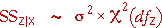
If the parameter for Z is non-zero but the parameters for subsequent variables are zero, the sequential sum of squares will be larger. Large sums of squares therefore suggest that a variable is important (provided subsequently added variables have zero parameters).
Testing
Since the ratio of two chi-squared variables, each divided by its degrees of freedom, has an F distribution, if a variable is unimportant (parameter zero), its F ratio will have an F distribution,
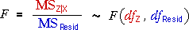
The observed F ratio in the anova table can be compared to the upper tail of this distribution to get a p-value.
Order of testing
Since the F ratio for a sequential sum of squares only has an F distribution if that variable and all subsequently added variables in the anova table are unimportant (zero parameters), you should not try to interpret any F ratio if terms below it on the table are important.
Always work up from the last variable added and stop trying to interpret the F-ratios and p-values when you reach a term that is significant.
This will be clearer in examples.
Effect of ancestors on height
The anova table below shows the effects of birth length, parents' height at age 18 and grandparents' height at age 18 on the heights of a group of men when they reached age 18.
Since grandparents' height is the bottom sequential sum of squares, we can directly interpret its p-value. An F-ratio as high as 0.44 would occur by chance with probability 0.7791 (its p-value). We would conclude that grandparents' height has no additional explanatory power if parents' height and birth length are already in the model.
With the initial ordering in the anova table, the p-value for parents' height is very low, so we conclude that it is almost certain that parents' height is important in the model for the mens' heights. (We can continue up the table since the bottom term is not important.)
Drag the red arrow for Parents to make it the top item in the table. With this order of terms, we can interpret the p-value for birth length. Since the p-value for Birth after Parents is 0.0162, we conclude that there is fairly strong evidence that Birth is important, even when Parents is in the model.
Etch rate
In this example, all four explanatory variables are uncorrelated with each other. This greatly simplifies interpretation of the anova table since all sums of squares (and hence F ratios and p-values) stay the same when the order of adding the variables changes.
From the p-values, we conclude that: